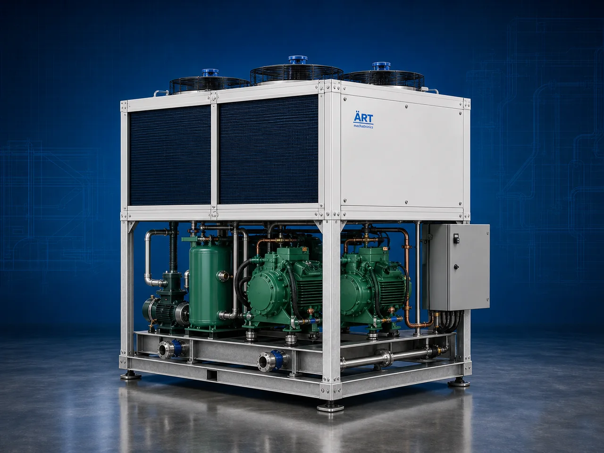

Chiller Machine (Industrial Cooling & Forced Draft Chilling System)
A Chiller Machine, also known as an Industrial Chiller, Cooling System, Forced Draft Chiller, or Industrial Refrigeration System, is an advanced industrial cooling solution designed for rapid temperature reduction, product cooling, heat removal, process stabilization, moisture control, and continuous industrial chilling operations across food processing, beverage, pharmaceutical, dairy, chemical, plastic, HVAC, biomass, and industrial manufacturing industries.

About the Chiller Machine
Chiller systems are widely used for:
- Product cooling operations
- Forced draft chilling
- Process temperature control
- Water and glycol cooling
- Food and beverage chilling
- Industrial heat removal
- Machinery cooling systems
- Continuous production line cooling
The machine improves:
- Product quality and stability
- Cooling efficiency
- Production productivity
- Temperature consistency
- Equipment protection
- Energy-efficient processing
- Industrial automation performance
Industrial chiller machines use:
- Refrigeration compressor systems
- Forced air circulation technology
- Evaporator and condenser units
- PLC and HMI automation controls
- Precision temperature monitoring systems
to rapidly remove heat and maintain controlled cooling conditions with superior efficiency and high industrial productivity.
Chiller machines are widely used in industries such as:
Food processing industries Beverage industries Dairy industries Pharmaceutical industries Chemical industries Plastic industries HVAC industries Industrial manufacturing industries
where controlled cooling, rapid heat removal, and continuous industrial processing are essential.
The machine is highly suitable for:
- Forced draft cooling operations
- Food and beverage chilling
- Process cooling systems
- Industrial refrigeration applications
- Water and glycol cooling
- Production line temperature control systems
ART Mechatronics offers high-performance chiller machines, engineered for continuous industrial operation, energy-efficient cooling performance, rugged construction, and reliable long-term industrial productivity.
Working Principle of Chiller Machine
- 1. Product Loading & Heat Transfer Process Products, air, water, or industrial equipment are exposed to chilled air or cooling media for heat removal operation.
- 2. Refrigeration & Forced Cooling Process Machine automatically circulates refrigerant through compressors, condensers, evaporators, and forced air systems to absorb and remove heat.
Intelligent temperature synchronization ensures rapid and uniform cooling operations.
- 3. Cooling & Chilling Operation Machine handles cooling of: ✔ Food products ✔ Beverages ✔ Dairy products ✔ Industrial machinery ✔ Water and glycol systems ✔ Plastic molds ✔ Chemical products ✔ Industrial process equipment
accurately and continuously.
- 4. Temperature Stabilization & Heat Removal Process Machine performs: Rapid chilling Forced draft cooling Heat exchange Temperature stabilization Moisture reduction Industrial refrigeration
for efficient industrial cooling and process control operations.
- 5. Intelligent Automation & Energy Management Integration Optional systems include: Digital temperature monitoring systems Variable speed compressors Energy-saving controls Remote monitoring systems Automatic defrost systems
- 6. Finished Product & Process Discharge Cooled products or stabilized processes discharged automatically for: Packaging operations Storage systems Further processing Cold chain logistics Export shipment handling
Types of Chiller Machines
- 1. Forced Draft Chiller Machine Designed for: ✔ Rapid cooling and high airflow industrial chilling applications
- 2. Water Chiller Machine Suitable for: ✔ Process cooling and industrial temperature control systems
- 3. Air Cooled Chiller Machine Uses: ✔ Industrial refrigeration and heat removal operations
- 4. Glycol Chiller System Designed for: ✔ Beverage, brewery, and low-temperature cooling systems
- 5. Screw Chiller Machine Suitable for: ✔ Large-capacity industrial cooling operations
- 6. Fully Automatic Industrial Chilling System Designed for: ✔ Complete industrial cooling automation lines
Industries Using Chiller Machines
🍅 Food Processing Industry Food cooling, ready-to-eat product chilling, and industrial refrigeration systems. 🥤 Beverage Industry Juice, soft drink, brewery, and beverage temperature control systems. 🥛 Dairy Industry Milk cooling, yogurt processing, and dairy refrigeration systems. 💊 Pharmaceutical Industry Medicine storage, process cooling, and controlled temperature systems. ⚗️ Chemical Industry Chemical process stabilization and industrial cooling operations. ⚙️ Plastic & Manufacturing Industry Mold cooling, machinery cooling, and industrial process temperature control systems.
Features & Advantages
- High-efficiency industrial cooling operation
- Rapid and uniform temperature reduction systems
- Energy-efficient refrigeration technology
- PLC and automation control systems
- Improves product quality and process stability
- Reduces overheating and thermal losses
- Supports multiple industrial cooling applications
- Reliable long-term industrial performance
- Smooth integration with industrial production lines
Technical Highlights
Machine Type: Chiller machine Industrial cooling system Forced draft chilling machine Material Compatibility: Food products Beverages Dairy products Industrial process fluids Chemical materials Plastic molds Industrial machinery Integration: Compressor systems Evaporator units Forced air circulation systems Temperature monitoring systems Features: PLC control system Touchscreen HMI Energy-saving refrigeration systems Automatic temperature control Remote monitoring systems Applications: Industrial cooling Rapid chilling Heat removal Temperature stabilization Process cooling Industrial refrigeration Automation: Semi-automatic Fully automatic industrial systems
Turnkey Industrial Cooling Solutions
ART Mechatronics offers: Complete industrial chilling systems Automatic cooling and refrigeration solutions Industrial process temperature control systems Cold chain integration systems Installation & commissioning After-sales service & AMC
Why Choose Art Mechatronics
Expertise in industrial cooling and automation systems Customized chilling solutions for multiple industries High-performance and energy-efficient refrigeration technology Advanced PLC and automation systems Proven industrial cooling performance across sectors
Applications
Food Processing Plants Beverage Manufacturing Facilities Dairy Processing Units Pharmaceutical Industries Chemical Processing Plants Industrial Manufacturing Industries
Related Process Equipment machines
Get pricing & specs for the Chiller Machine
Share the product, target capacity, current process and plant location. These details help our engineers discuss the right machine or line configuration.
One partner, from design to start-up
ART Mechatronics designs, manufactures, installs and commissions your Chiller Machine solution with regional presence in India, UAE and Thailand.